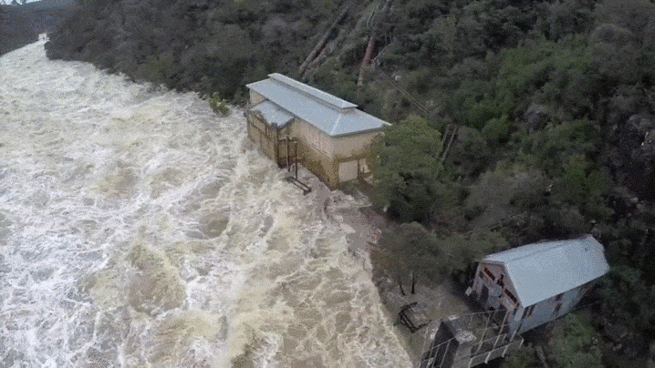

Floods are the most dangerous aspect of thunderstorms, killing an average of 80 people every year. They also cause extensive damage to property, especially residential dwellings. For these reasons, members of the public find it desirable to take preventative measures before floods occur. Although it is not possible to predict or stop all floods around the globe, understanding how floods form reduces the risk that lives and property will be lost. There are several causes of floods.
There are several types of floods, but every type of flood follows three principles. The first principle is that the amount of water in a given area (flood region) is too large for the region to accommodate--floods thus form when water percentages exceed capacity. The second principle is that weather influences the water percentage present in a flood region.Lastly, geographical factors determine how the flood behaves. These key factors lead to the formation of floods.
When storms such as hurricanes form over the water, they create waves that, in the deep ocean, are harmless. As the waves near shore, however, the water in the waves has nowhere to go except up onto the shore. These waves (storm surges) crash onto the shore very quickly, flooding the coastal area. Additionally, the lower the barometric pressure, the higher the tides are near the shore and the greater the chances of flooding are.
Flooding from Rivers and Streams

Riverine flooding occurs when a stream or river can't hold all the water flowing into it. Usually the extra water comes from melting snows or larger-than-normal amounts of precipitation, which is why riverine flooding is a concern in the spring. When the water flowing into the river exceeds the volume of the riverbed, it spills up onto and over the riverbank. This type of flooding can last for weeks and is slow-moving.
Flooding at Dams
Dams can be man-made structures, or can occur naturally, as when ice, rocks or logs block normal river flow. Dams contribute to flooding in two ways. First, the water flowing against a dam may build up behind the dam until it spills out of a riverbed, lake or other large body of water. The region behind the dam thus may flood. Secondly, when a dam doesn't work right, water suddenly rushes back into an area from which dam operators (or animals) had withheld it. The amount of water that flows into the region in front of the dam usually exceeds the amount of water that region can disperse quickly, so flooding occurs, a phenomenon known as a flash flood.
Alluvial Floods
In an alluvial fan, which is an area at the base of a hilly or mountainous area in which sediment and debris has collected, water pathways aren't clear. When a pathway becomes blocked, water that flows down the hill or mountain spills over the blockage (as in dam flooding) and cuts a new path as it seeks a lower geographical level. These kinds of floods thus are dangerous because it is so hard to predict precisely what new path the water will take and where the resulting floods may occur.
Urban flooding
Urban flooding is significantly different from rural flooding as urbanization leads to developed catchments, which increases the flood peaks from 1.8 to 8 times and flood volumes by up to 6 times. Consequently, flooding occurs very quickly due to faster flow times (in a matter of minutes). Urban areas are densely populated and people living in vulnerable areas suffer due to flooding, sometimes resulting in loss of life. It is not only the event of flooding but the secondary effect of exposure to infection also has its toll in terms of human suffering, loss of livelihood and, in extreme cases, loss of life.
Urban areas are also centering of economic activities with vital infrastructure which needs to be protected 24x7. In most of the cities, damage to vital infrastructure has a bearing not only for the state and the country but it could even have global implications. Major cities in India have witnessed loss of life and property, disruption in transport and power and incidence of epidemics. Therefore, management of urban flooding has to be accorded top priority.
Increasing trend of urban flooding is a universal phenomenon and poses a great challenge to urban planners the world over. Problems associated with urban floods range from relatively localized incidents to major incidents, resulting in cities being inundated from hours to several days. Therefore, the impact can also be widespread, including temporary relocation of people, damage to civic amenities, deterioration of water quality and risk of epidemics.
All Rights Reserved | Akila Ishan Leitan | EUSL/TC/IS/2016/COM/63